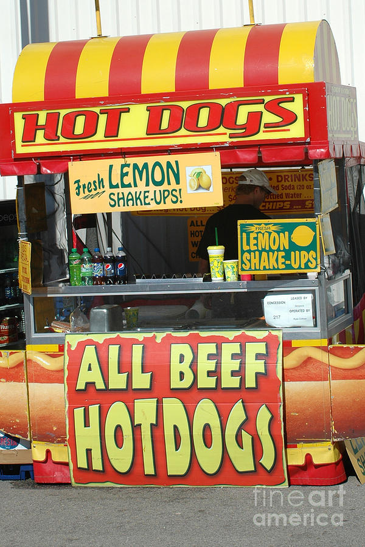
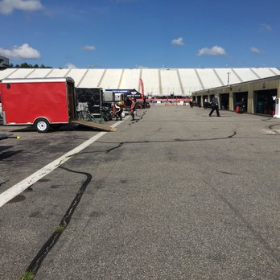

After searching for a spot for 10 minutes you finally found one, you parked your car and grabbed your stuff. You approach the entrance and get in, your feeling hungry but you want to be able to get into the garage area before it closes, what are you going to do?
|  You decide to get some food quickly. |  You decide to check out the garage area first. |